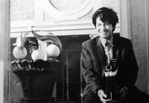
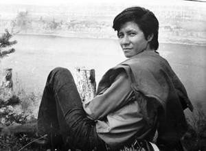
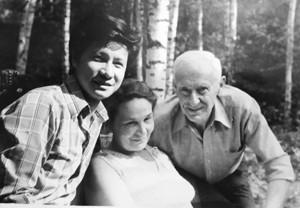
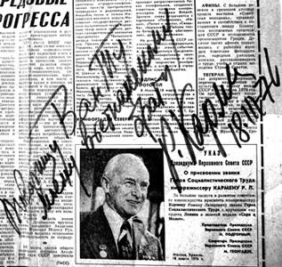
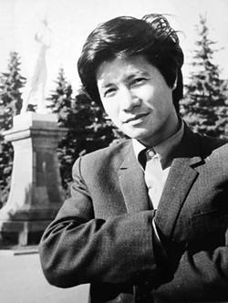
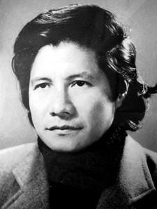

... “ Nhà trường VGIK này và tôi có dạy bảo các em thì cũng chỉ là hướng dẫn cho các em hơn hai chục chữ cái. Những chữ cái đó ghép thành từ, viết nên trang nên quyển là tùy ở sức lực và lòng yêu nghề của các em.
☆
Tôi muốn nói rằng tôi chưa dạy được gì cho các em cả. Bởi vì không ai dạy ai trở thành nghệ sĩ thực sự. Tôi cũng không muốn các em thành những Roman Karmen, các em phải trở thành chính các em... ”
☆
Trần Văn Thủy nhớ lại...
Vậy là nhờ sự cưu mang của ông Ðoàn, nhờ sự quan tâm của một số vị lớn tuổi, có trách nhiệm, “Những Người Dân Quê Tôi” ra đời và đoạt giải Bồ Câu Bạc ở Liên hoan phim Quốc tế Leipzig 1970. Nó cũng được in ra rất nhiều bản, chiếu ở nhiều nơi kể cả trong chiến trường, rồi nhận giải Bông sen bạc trong Liên hoan phim Quốc gia.
Từ đó tôi có cảm giác mọi người nhìn tôi với ánh mắt thân thiện và cởi mở hơn. Tôi được giữ lại miền Bắc, một mặt do điều kiện sức khỏe của tôi khó bề trụ được để lại tiếp tục xông pha ở chiến trường như những năm về trước; mặt khác trường Ðiện ảnh cũng cần một người đã từng quay phim ở chiến trường làm chủ nhiệm lớp đào tạo phóng viên quay phim tiếp theo để cung cấp cho chiến trường miền Nam lúc đó.
Học viên lớp quay phim tôi được phân công phụ trách phần lớn là các em có gốc từ miền Nam tập kết ra Bắc; còn lại là từ miền Bắc và các cơ quan khác gửi đến. Sau này nhiều người trong số họ rất thành đạt.
Khi nhận làm chủ nhiệm lớp này, tôi vẫn còn ốm yếu lắm, cũng chẳng đóng góp được gì nhiều nhưng bằng chút kinh nghiệm quay phim chiến trường, tôi giúp các em hình dung và thích nghi dần với một tương lai nghiệt ngã đang chờ đợi các em.
Hiệu trưởng thời đó vẫn là thầy Trần Ðức Hinh hiền lành, đức độ; trưởng phòng giáo vụ vẫn là anh Trương Huy vui tính; trưởng phòng hành chính là anh Sáng, người miền Nam, hết lòng tận tụy lo cái ăn chỗ ở cho học viên. Cơ ngơi trường Ðiện ảnh lúc đó chỉ là mấy dãy nhà tranh mái lá quây quanh một cái sân đất ở 33 Hoàng Hoa Thám.
Giữa năm 1972 thầy Hinh cho tôi biết là tổ chức cố ý định đào tạo tôi trở thành đạo diễn, cho tôi đi học ở Liên Xô. Tôi rất mừng nhưng cũng rất phân vân chuyện đi hay ở. Tôi xa gia đình trên mười năm liền, 5 năm Tây Bắc, 5 năm đi Nam, bố mẹ già cả, các em chưa đâu vào đâu. Vợ tôi sinh con đầu lòng, cháu Trần Nhật Thăng mới mấy tháng tuổi, chạy ăn từng bữa, sơ tán từng ngày.
Thế rồi cũng phải đi. Ði để tìm đường đi tiếp; đi để tìm đường cứu nhà - như vợ tôi nói khi chia tay ở Lập Thạch, Vĩnh Phú, nơi sơ tán của mấy cơ quan thuộc Bộ Văn hóa.
Bây giờ nhớ lại những ngày xưa, tôi không thể không cám ơn gia đình, cám ơn vợ tôi đã cắn răng hứng chịu mọi gian nan của những năm khốn khó tiếp theo để tôi yên tâm ra đi. Bố tôi cũng phấn chấn hẳn lên, không phải vì tôi đã thành đạt gì mà có lẽ cái ám ảnh của chủ nghĩa lý lịch trong ông đã vợi bớt đi chăng.
☆
Trong đợt máy bay Mỹ ném bom năm đó, lưu học sinh đi Liên Xô phải tập trung ở Ðại Từ, Thái Nguyên. Phần lớn là các em mới tốt nghiệp phổ thông trung học, ngoài ra có một số lớn tuổi hơn, đã ra công tác như tôi và một số người nữa. Ca Lê Thuần được cử làm trưởng đoàn, tôi làm phó đoàn.
Trong khi chờ tàu, tránh máy bay tại Ðồng Ðăng, hai thằng trưởng phó đoàn đi uống rượu chui, say túy lúy đi lang thang trên bờ suối đầy sỏi đá, văng ra đủ chuyện tếu táo và hẹn nhau không bao giờ quên kỉ niệm này.
Những ai đã đi tàu liên vận Hà Nội – Bắc Kinh – Ulanbator – Matxcơva đều không thể quên chuyến đi mười ngày chín đêm này. Bây giờ đi máy bay thì nhanh chóng tiện lợi hơn thật đấy nhưng nếu đi để nhìn, để lấy cảm xúc thì đi tàu hỏa là nhất. Chặng đường ấy đã đưa ta đến với rất nhiều cảnh quan, những thành phố, làng mạc, đồng ruộng, sông ngòi, màu da, tiếng nói khác nhau. Ấn tượng không thể nào quên được khi tàu chạy men hồ Baikan. Gọi là hồ nhưng mênh mông bát ngát như biển. Trên bản đồ, hồ Baikan như một hạt gạo nhưng tàu đi nửa ngày mới qua hết đoạn đường dưới mũi nhọn của hạt gạo đó. Mọi người đều nhoài ra cửa sổ để nhìn, để ra sức cảm nhận sự vô cùng của tạo hóa...
Rồi những hàng bạch dương, không, những cánh rừng bạch dương trùng điệp bạt ngàn...
Tôi nhớ Baikan không chỉ vì vẻ đẹp mê hồn của nó. Tôi có những kỉ niệm khó quên ở đây, khi học năm thứ hai ở trường Ðiện ảnh Quốc gia Toàn Liên bang, tên viết tắt là вгик, (всёсоюзный государственый иститут кинематография), thường gọi là VGIK, tôi đã trở lại đây làm phim về công trình đường sắt nối liền sông Amua với hồ Baikan, gọi tắt là BAM.
Bộ phim tuy là bài tập nhưng đã cho tôi nhiều ân huệ, sẽ kể sau vì đó là chuyện làm nghề.
Năm 1972, 1973 tôi cùng các bạn Việt Nam và các bạn nước ngoài học tiếng Nga ở Ðại học Lomonoxov. Ðây là lần đầu tiên tôi được thấy một trường đại học bề thế đến vậy.
Mùa hè 1973 tôi đến VGIK để thi tuyển theo qui định.
Một bất ngờ và hạnh phúc tột độ là tôi được gặp lại Roman Karmen. Ông ngồi chiếc ghế bành sang trọng đặt giữa phòng, xung quanh là các giáo sư, các trưởng khoa. Tôi ngồi đối diện với ông, có anh Nguyễn Mạnh Lân, một người bạn thân sang trước ba bốn năm, thông thạo tiếng Nga ngồi cạnh để giúp đỡ nếu tôi lúng túng.
Karmen nhìn tôi cười và nheo nheo con mắt:
- Oh là là! драствуй студент - лауреат (xin chào chàng sinh viên đoạt giải thưởng)!
Ông hỏi tôi đã có vợ con chưa? Chiến tranh Việt Nam sẽ đi đến đâu? Ông Mai Lộc, ông Phạm Văn Khoa có khỏe không?...Karmen rất nhớ thời kỳ 1953-1954 ông quay phim ở Việt Nam...
Cứ lan man như vậy chẳng có câu nào mang tính thi cử cả. Các giáo sư ngồi bên tỏ vẻ sốt ruột nhưng Karmen đâu có để ý.
Ông hỏi:
- Em muốn học năm thứ mấy?
Tôi bật lên như lò xo:
- Em muốn học thầy, học từ năm thứ nhất như mọi người.
- Vậy thì từ nay em có thể tự coi mình là sinh viên năm thứ nhất được rồi.
Có tiếng xì xào. Một vị giáo sư lên tiếng:
- Ấy, không nên nhanh chóng quá, đơn giản quá như thế.
Karmen quay lại nhún vai:
- Cậu ta đã đoạt giải thưởng ở Liên hoan phim Quốc tế ba năm trước, năm 1970, khi tôi làm giám khảo. Nếu các vị xem bộ phim đó thì các vị cũng có ý nghĩ như tôi. Cậu ta đã quay những thước phim bằng chính sinh mạng của mình. Với tôi, việc cậu ta sống và đang ngồi đối diện với chúng ta ở đây, đã là một điều kỳ diệu rồi.
Anh Nguyễn Mạnh Lân đã chứng kiến và nghe rõ những gì Karmen nói hôm đó. Vậy là coi như tôi không cần phải thi cử gì cả. Cuộc đời tôi có lúc may mắn là vậy, tám năm trước, khi vào học trường Ðiện ảnh Việt Nam, tôi cũng không phải thi: Ông Nông Ích Ðạt lí sự với thầy Trần Ðức Hinh rằng tôi là người miền núi gửi về phải được chiếu cố...
☆
Hai lần đi học. Lần thứ nhất, anh chàng “dân tộc” nhưng chẳng Lò, chẳng Nông, chẳng Ma về xuôi vào học ở trường Ðiện ảnh Hà Nội, không phải thi. Lần thứ hai, anh chàng “nhà quê Hà Nội” ấy sang tận Liên Xô, xứ sở của những cuốn “Phim màu Liên Xô màn ảnh rộng” chiếu cùng trời cuối đất ở Việt Nam để học đại học.
Và cũng không phải thi!

“Vậy thì từ nay em có thể tự coi mình là sinh viên năm thứ nhất được rồi”.
Từ năm thứ nhất đến năm thứ 4, chúng tôi được học hết lý thuyết và thực tập làm phim; đến năm thứ 5 thì người ta dành cho cả một năm với kinh phí lớn để làm phim tốt nghiệp. Lớp học năm cuối cũng gần tan tác, ai cũng lo việc thi cử, làm luận án, giờ lên lớp chẳng còn bao nhiêu. Thầy Karmen cũng ít khi đến lớp vì thầy có việc của thầy - ông đi khắp nơi trên thế giới.
Tôi đã nói với thầy:
- Thưa thầy, em muốn về Việt Nam sớm.
- Tại sao không ở lại để tiếp tục làm luận án cao học?
- Thưa thầy, không ạ!
Tôi nghĩ đã làm nghề thì phải làm phim cho hay chứ cầm một tấm bằng cao học hay gì đấy mà làm phim dở thì chẳng để làm gì. Tôi học để làm nghề chứ không để lấy một bằng cấp cao hơn.
- Xin thầy cho em được bảo vệ sớm. Nếu ở thêm một năm nữa thì mất nhiều thời gian quá.
- Ðược. Lấy phim Там где мы жили (Nơi Chúng Tôi Ðã Sống) làm phim tốt nghiệp nhé?

Xiberi - chọn cảnh cho phim “Nơi Chúng Tôi Ðã Sống”
Ðó là phim tôi làm cuối năm thứ hai, cuốn phim tài liệu nói về sinh hoạt và lao động của những sinh viên quốc tế trên công trường Ðường Sắt Baikal – Amur ở Xiberi.
Ngay sau khi ra đời nó đã đoạt giải Hoa Cẩm Chướng Ðỏ, tức giải cao nhất của Liên hoan phim trường VGIK, dự thi ở Ba Lan và được đưa đi trình chiếu ở nhiều nơi.
Tôi đã dùng bộ phim đó để bảo vệ tốt nghiệp, được nhận bằng đỏ và về nước sớm một năm. Như vậy tôi chỉ ở Nga từ năm 1972 – 1977.
Về sau bộ phim này đã trở thành bộ phim kinh điển, hàng năm sinh viên khoa đạo diễn năm thứ nhất sẽ xem phim này. Các sinh viên Việt Nam rất tự hào về thành công đó.
Nhưng thực ra nó chỉ hay vừa vừa, là một добрый филм (phim tốt, phim xem được), thầy bạn động viên thêm thôi.

Thủy với bà phụ giảng Garivovna và Roman Karmen
Ðược học Roman Karmen là điều may mắn với tôi. Suốt mấy năm học ông, tôi nhận được nhiều sự ưu ái của ông, trước tiên là ông tin tôi, không đòi hỏi gì nhiều ở tôi. Ngày 18-3-1976 ông được trao giải thưởng lớn của nhà nước Liên Xô, khi lên lớp ông mang theo tờ báo Cоветская Kултура (Văn hóa Xô viết) đăng tin này và ảnh của ông. Các sinh viên xúc động chúc mừng thầy, mỗi đứa đều muốn được thầy tặng tờ báo đó với lời đề tặng. Ông nói: “Các em có 17 người mà báo chỉ có một tờ, tôi chỉ có thể tặng cho một người. ” Ông nheo mắt nhìn khắp lượt, đứa ở Uzbekistan, đứa ở Sudan, đứa ở Palestine, Kierghizi, Kapkaz, đứa ở Ba Lan...
Ông dừng lại nhìn tôi và nói rằng: “Trong chúng ta Thủy là đứa ở xa nhất, các em hãy tán thành để Thủy giữ tờ báo này làm kỉ niệm khi nó trở về Việt Nam.” Ông mở cây bút dạ nét đậm và ghi lên tờ báo, chỗ in ảnh của ông: “Tặng Trần Văn Thủy người em Việt Nam của tôi” .
☆

“Thủy là đứa ở xa nhất, các em hãy tán thành để Thủy giữ tờ báo này làm kỉ niệm khi nó trở về Việt Nam”
☆
Khi tôi về thăm ông ở nhà vườn ngoại ô, ông nói với tôi về Ðiện Biên Phủ, về cuốn sách “Свет в джунгляx” (Ánh Sáng Trong Rừng Sâu) ông viết khi rời Việt Nam. Tôi rất tiếc là ở Việt Nam, nói đến ông, nhiều người chỉ biết và chỉ quan tâm đến bộ phim “Việt Nam Trên Ðường Thắng Lợi” - bản tiếng Việt do Nguyễn Ðình Thi viết lời bình (bản tiếng Nga do chính Roman Karmen viết lời và tên phim chỉ có hai chữ: Việt Nam).
☆
Người ta ít biết đến cuốn sách cực hay này của ông viết về Việt Nam thời kì đó. Ngay bộ phim của ông, thế hệ trẻ bây giờ cũng không mấy người được tỏ tường. Nghe nói cách đây mấy năm nhân viên truyền hình Việt Nam qua Matxcơva “phát hiện” ra bộ phim này và bỏ ra một số tiền không nhỏ để mua bản quyền. Không biết thì phải hỏi. Bản quyền phim “Việt Nam Trên Ðường Thắng Lợi” (tức phim “Việt Nam”, như nói ở trên) là của chúng ta (và của Liên Xô - đương nhiên). Ai đời lại chi tiền ra mua bản quyền của chính mình, rồi tung lên truyền hình như một phát hiện, một chiến công; lại còn phụ đề rằng “Bản quyền là của Ðài Truyền hình Việt Nam”.
Những cha chú ngành Ðiện ảnh Ðồi Cọ khi xưa cùng ê-kíp của Karmen làm “Việt Nam Trên Ðường Thắng Lợi” nghĩ gì? Lẽ ra nếu trót lỡ hành xử như vậy, tối thiểu Truyền hình Việt Nam phải có lời xin lỗi, xin lỗi nhà nước vì tiêu tiền vô lí, và phải xin lỗi ngành Ðiện ảnh Việt Nam về việc làm vô duyên, vô tích sự.
☆
Nhà vườn của Karmen, của Simonov, của Eptusenko liền cạnh nhau ở ngoại ô phía Bắc Matxcơva. Ðám sinh viên chúng tôi hay tụ bạ ở đây và có dịp được hầu chuyện các nhân vật nổi tiếng thời đó. Ông Simonov cả đời chẳng biết phim nhựa là gì nhưng sau tập thơ “Nỗi Ðau Khổ Không Của Riêng Ai” của ông nói về trẻ em Việt Nam trong chiến tranh ra đời và đạo diễn Marian Babak đã làm thành cuốn phim cùng tên thì Simonov lại là tác giả chính.
Trong việc làm cuốn phim này có chuyện bếp núc, chuyện làm nghề. Tất cả các nhà lí luận, những thầy giáo điện ảnh đều dạy rằng: Lời bình nhất thiết phải viết sau khi hình ảnh đã được dựng hoàn chỉnh. Ðằng này lời bình, lời thơ của phim có trước, Marian Babak sang Việt Nam tìm hình ghép vào sau. Lý sự về cách làm phim tài liệu bị phá vỡ và nó chỉ lệ thuộc vào hai tiêu chí: Thật và Hay. Chính bởi vậy khi làm phim, đã nhiều lúc tôi viết lời trước, đành rằng sau khi dựng có khi phải chỉnh trang đôi chút.
☆
Trong thời gian ở Nga, tôi được học đủ các môn về điện ảnh và khoa học xã hội. Tôi được mở mang rất nhiều. Nhưng có một điều mà gần như tôi ù ù cạc cạc, các bạn Nga nói với nhau những gì đó trước mặt tôi rồi còn bảo nhau: “Nó không hiểu đâu”...
Cũng phải nói thành thật rằng tuy được sống ngay thủ đô của Liên bang Xô viết nhưng tôi không hiểu biết sâu về xã hội Liên Xô lúc ấy cho lắm, tôi chỉ thấy được một chút phần nổi của cả trái núi băng trôi. Tôi không biết Xôlzenitxin, không biết Pastenak, không biết Sakharov, không biết Trotski... Xem phim Liên Xô thì tin rằng Hồng quân tất thắng, Bạch vệ tất thua...
☆

...tôi không hiểu biết sâu về xã hội Liên Xô lúc ấy cho lắm, tôi chỉ thấy được một chút phần nổi của cả trái núi băng trôi.
☆
Trường VGIK và kí túc xá chúng tôi ở gần khu triển lãm Kinh tế Quốc dân, gọi tắt theo tiếng Nga là вднх. Ở đó một thời có một khẩu hiệu bằng đồng, mỗi chữ cái cao bằng đầu người: “Ðảng Cộng Sản Liên Xô long trọng hứa với thế hệ ngày nay rằng: Chúng ta sẽ sống trong Chủ nghĩa Cộng Sản”.
Quả thực hồi đó chúng tôi yêu nước Nga, yêu người Nga nhưng chúng tôi không hiểu được trí thức Nga, trí thức Xô-viết nghĩ gì. Về sau tôi mới hiểu dần họ không tán thành nhiều quan điểm của nhà cầm quyền, họ bất mãn với chế độ...
Tôi từ chỗ nghèo đói khổ sở, được du học thế này là một ân huệ trời biển rồi...
☆
Tôi còn nhớ lễ bảo vệ tốt nghiệp hôm đó vì có hai học trò của hai ông thầy nổi tiếng bảo vệ: Thằng bạn “mắt lác” người Algerie, học trò của Gheraximov (sau này trường VGIK đổi tên thành trường Gheraximov) và tôi, học trò của Roman Karmen.
Tôi nhận bằng tốt nghiệp là lên tàu về nước ngay.
Ðó là cuối năm 1977. Tôi may mắn là sinh viên duy nhất của lớp đó bảo vệ tốt nghiệp có sự hiện diện của thầy. Các bạn cùng lớp đều bảo vệ vào các tháng 8, 9, 10-1978. Khi đó Roman không còn nữa. Ông sinh tháng 11 năm 1906, mất tháng 5 năm 1978, thọ 72 tuổi.
Thành phố Ôđexa quê hương ông có một con đường yên ả mang tên Roman Karmen.
☆

Tôi nhận bằng tốt nghiệp là lên tàu về nước ngay. Ðó là cuối năm 1977.
☆
Nhớ lại trong lễ bảo vệ tốt nghiệp của tôi ở Matxcơva ngày ấy, thầy Roman Karmen hỏi tôi:
- Về nước em sẽ làm gì, em quan tâm đề tài gì?
Tôi lễ phép trả lời:
- Thưa thầy, Việt Nam đã hòa bình, vĩnh viễn không còn chiến tranh, không còn kẻ thù nào dám nhòm ngó đất nước tôi như lời của Tổng Bí thư Lê Duẩn đã nói. Bởi vậy đề tài mà tôi quan tâm là thân phận con người và xây dựng một xã hội tốt đẹp hơn...
Nhưng khi tôi được về nước thì cũng là lúc có chuyện bất ổn ở biên giới Việt - Trung, rồi chuyện “Nạn kiều”, rồi xảy ra chiến tranh tàn khốc hủy diệt sáu tỉnh biên giới phía Bắc. Luận bàn về cuộc chiến tranh này cần nhiều giấy mực, thời gian và cả sự ngay thẳng. Làm sao có thể chấp nhận được việc quân Giải phóng nhân dân Trung Quốc mặc quân phục bộ đội Việt Nam tràn vào lãnh thổ Việt Nam, đốt nhà tàn sát trong sự ngơ ngác thất thần hoảng loạn của dân chúng? Thời đó các xưởng phim trong Nam ngoài Bắc, bên Quân đội, bên Phim truyện và tất nhiên cả xưởng phim Tài liệu của chúng tôi đổ xô lên biên giới làm phim về đề tài này.
Tôi mới về nước, theo dõi thời sự từ tháng 3 -1978, khi trên đài phát thanh, ông Xuân Thủy trả lời báo chí nước ngoài về những bất ổn ở biên giới. Tôi có linh cảm chiến tranh chắc chắn sẽ xảy ra. Tôi có nói chơi với anh Lý Thái Bảo, giám đốc xưởng phim Tài liệu lúc đó:
- Ðánh nhau đến đít rồi mà các bố cứ đi làm những thứ nạn kiều, cầu Bắc Luân, những chuyện giời ơi đất hỡi chi chi đó thì chết cả lũ...
Anh Lý Thái Bảo gật gù. Mấy ngày sau gặp lại tôi, anh bảo rằng:
- Tớ đã họp bàn trao đổi trong Ban giám đốc, Hội đồng Nghệ thuật, mọi người đều thấy đúng nhưng chẳng biết làm thế nào, ý tứ ra sao cho kịp với tình hình...
Và anh tặc lưỡi:
- Thôi! Cậu nói ra ý đó thì tốt nhất cậu làm đi.
Tôi giật mình. Theo thông lệ của nghề này, về xưởng phim thì phải có thời gian thực tập, đi phụ cho các bậc đàn anh vài ba phim, vài ba năm mới được xét làm đạo diễn chính.
Ông Lý Thái Bảo giao việc, tôi đành bắt tay vào làm bộ phim đầu tiên của tôi ở hãng phim này.
Tôi tự mò mẫm đọc tài liệu, làm kịch bản, lên biên giới khảo sát thực tế. Tôi đạo diễn, tổ chức quay và viết lời. Phạm Quang Phúc, em rể tôi là quay phim chính...
Phim có tên là “Phản Bội”.
Một thời gian sau, bùm một cái, nó gây chấn động, đoạt giải vàng, giải đạo diễn xuất sắc trong Liên hoan phim Quốc gia 1980.
Ðó là bộ phim nhựa 35mm, dài nhất trong lịch sử Hãng phim Tài liệu Việt Nam cho đến thời điếm đó: 90 phút.
Phim tài liệu thường khó làm, khó xem nhưng “Phản Bội” hấp dẫn như một bộ phim truyện hay, hóm hỉnh và đầy tính kịch, được giới làm phim trong nước và quốc tế rất quan tâm như ở Thụy Ðiển, ở Liên hoan phim Tasken, ở Liên hoan phim Leipzig. Ðặc biệt là Hainoski và Soiman (hai tác giả tinh quái người Ðức đã làm phim “Phi Công Mặc Quần Áo Ngủ”) đánh giá cao bộ phim này. Có lẽ vì vậy mà cuộc đời làm phim của tôi không có may mắn đi cắp tráp, đi phụ cho các đạo diễn đàn anh. Tôi không bị hoặc được ảnh hưởng từ ai. Nghĩ gì tôi làm nấy.
Bây giờ người ta không chiếu bộ phim này, không muốn nhắc đến nó nữa vì những lí do tế nhị chính đáng và không chính đáng của sân khấu chính trị. Nếu làm lại “Phản Bội”, tôi sẽ cấu trúc lại, viết lại lời bình và tên phim có thể sẽ là “Nỗi Buồn Nhược Tiểu”.
☆